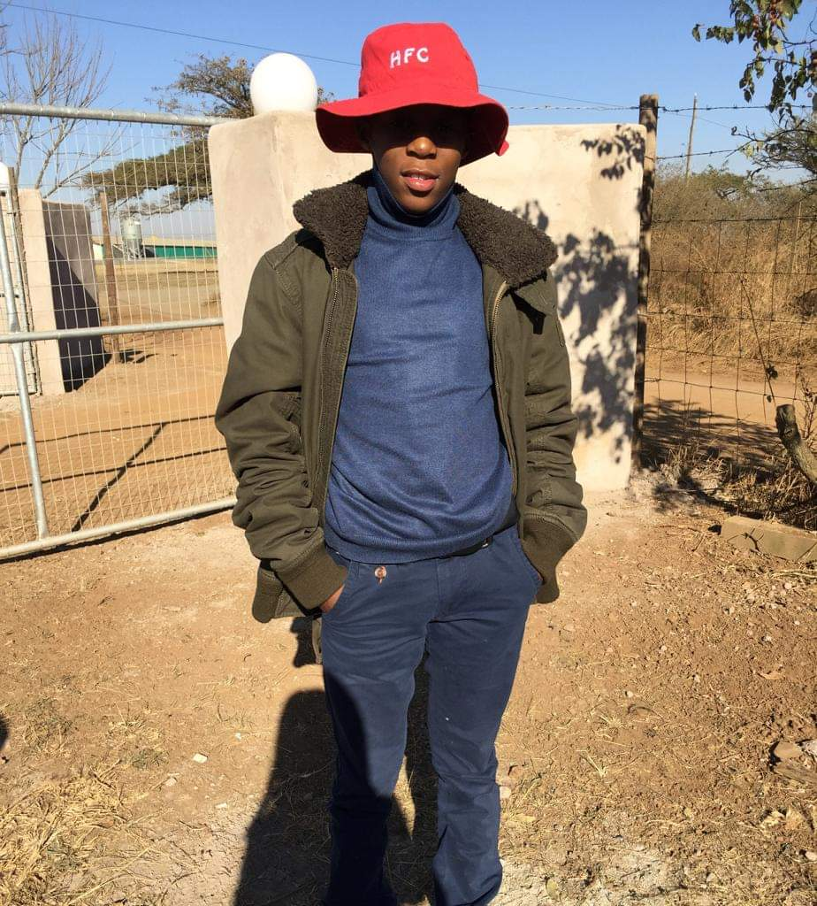

Saneliso Lehlohla
Aspiring Software Developer
Aspiring Software Developer
Hello! I'm Saneliso Lehlohla, a dedicated and passionate Computer Sciences student, currently pursuing my degree in Computer and Information Sciences at IIE Varsity College. As a native Zulu speaker with a deep connection to my culture, I bring unique perspectives to every project I work on.
With a strong foundation in a wide range of programming languages and technologies, I thrive on solving complex problems and turning ideas into impactful software solutions. My primary focus is on web development, where I leverage modern tools and frameworks to build efficient, user-friendly applications. However, my interests also extend to web development, database management, and cloud technologies.
I believe that technology has the power to change lives, and I’m driven to be a part of that transformation. When I’m not coding, you can find me exploring the latest tech trends, contributing to open-source projects, or enjoying a good game of rugby!
Completed Matric with a Bachelor's Pass. Actively participated in extracurricular activities, including rugby and soccer, developing leadership and teamwork skills.
Pursuing a Bachelor's degree in Computer and Information Sciences and Applied Development. Focused on mobile and web development, with courses on software engineering, databases, and cloud computing.
HTML
JavaScript
CSS
Java
Kotlin
C#
SQL
MySQL
Organized and coordinated various school sports events, managing logistics and ensuring smooth operations.
Worked as a barman, serving drinks and handling customer orders during rugby matches and other stadium events.
Developed and maintained a website for a non-profit organization, ensuring a user-friendly experience and accessibility.
Hyperlocal Weather App built using Android and Kotlin. Provides real-time weather updates with multi-language support and offline mode.
View on GitHubA web application for a drug recovery center built to manage user data and engagement, developed using HTML, CSS, and JavaScript.
View on GitHubThe Municipal Citizen Services App allows citizens to report local issues directly to municipal authorities and stay informed about local events, developed using C# and the .NET Framework for Windows Applications.
View on GitHubFeel free to reach out to me on my socials: